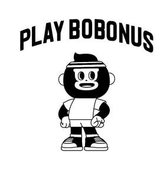

Trade Mark Journal No.2025/019 9 May 2025
UK00004192518 22 April 2025 (9,18,21,24,25,28)

- Class 9
- Computer peripheral devices; photocopiers [photographic, electrostatic, thermic]; weighing machines; jigs [measuring instruments]; signs, luminous; mobile telephones; protective films adapted for smartphones; headphones; cameras [photography]; surveying apparatus and instruments; eyepieces; wires, electric; theft prevention installations, electric; spectacles; batteries, electric.
- Class 18
- Pelts; leathercloth; school bags; travelling trunks; leather cord; rucksacks; bags [envelopes, pouches] of leather, for packaging; briefcases; garment bags for travel; bags; business card cases; umbrella or parasol ribs; walking sticks; leather leads; clothing for pets.
- Class 21
- Cooking pot sets; bowls [basins]; glasses [receptacles]; ceramics for household purposes; drinking vessels; watering devices; brushes; toothbrushes; toothpicks; cosmetic utensils; thermally insulated containers for food; cloths for cleaning; powdered glass for decoration; pet feeding bowls; electric devices for attracting and killing insects.
- Class 24
- Upholstery fabrics; fabric; textile material; cloth; adhesive fabric for application by heat; wall hangings of textile; felt; household linen; bed covers; bedspreads; bed linen; bed blankets; curtains of textile or plastic.
- Class 25
- Underclothing; clothing; knitwear [clothing]; pajamas; layettes [clothing]; bathing suits; footwear; caps being headwear; hosiery; gloves [clothing]; scarves; suspenders; shower caps; sleep masks; waterproof clothing.
- Class 28
- Games; toys; playing cards; playing balls; body-training apparatus; targets; machines for physical exercises; swimming pools [play articles]; gloves for games; elbow guards [sports articles]; knee guards [sports articles]; protective paddings [parts of sports suits]; ornaments for Christmas trees, except lights, candles and confectionery; rods for fishing; scratch cards for playing lottery games.
TEB INTERNATIONAL LIMITED
Representative: Ye Xuemei - LEDFINE